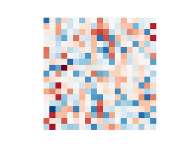
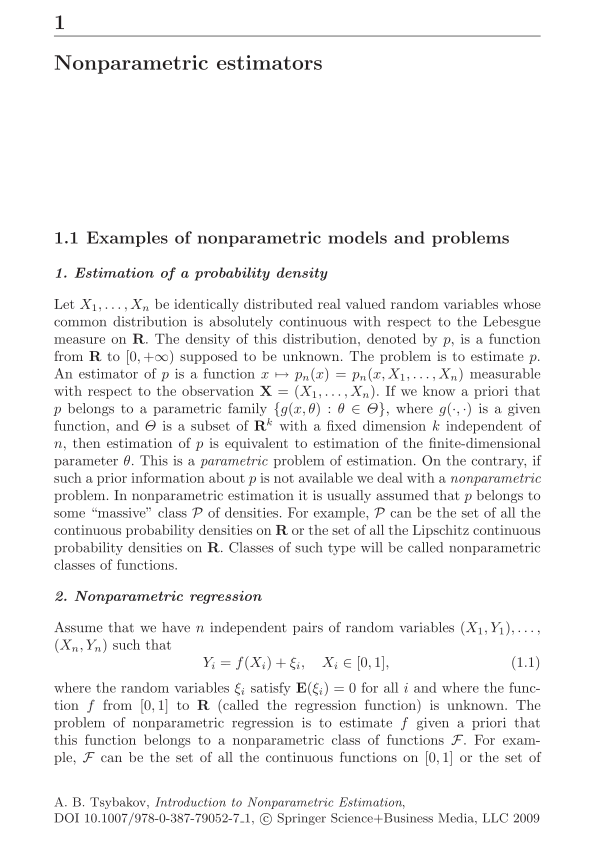
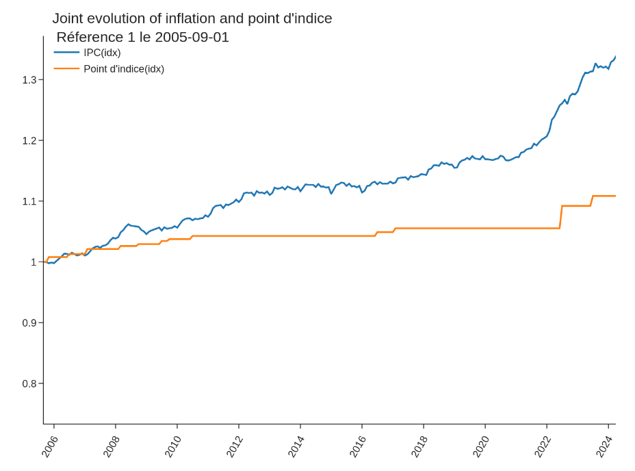

Welcome to my blog, Donadas Brutas. Any kind of feedback is welcome, so feel free to reach out. Thanks for your interest and time.
2025
Gaussian elimination in a glimpse
linear algebra
math visualization
Gaussian elimination in action: a simple visualization of a famous algorithm

No matching items
2024
Quadratic programming
Calibration
PAVA
Optimization
Iso, Iso, Iso ... Tonic! Or how to fit a non-decreasing signal.


statistics
optimization
machine learning
Back to exponential weights and log-sum-exp functions

Public civil servant salaries and inflation
news
code
data science
economics
Bye bye public civil servants

No matching items
The blog post listing is based on the website source of Marvin Schmitt, itself inspired by Andrew Heiss, who has put together an incredible listing template under CC-BY-SA 4.0 license. Thanks to both!